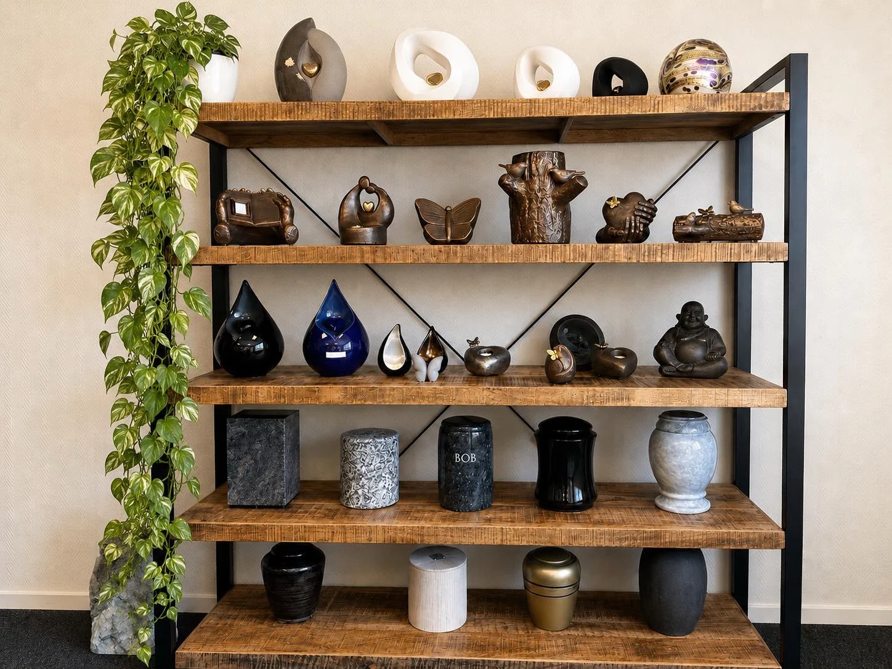

Personal guidanceWe guide you through every step
Bespoke memorial stones
Bespoke memorial monuments,
personally designed.
Universum Soul designs and creates bespoke memorial stones and monuments. From modern and classic designs to Islamic memorials, we personally guide families through design, material selection, finishing and installation.
Premium natural stoneDurable and of the highest quality
Professional installationInstalled professionally and with care
Bespoke designA unique design based on your wishes
No-obligation adviceHonest, transparent and personal
About Universum Soul
Bespoke memorial stones, with care for every memory
A memorial monument is personal. We first listen to your wishes, the story of your loved one and the preferred style. We then translate these ideas into a bespoke memorial stone that reflects the person being remembered.
We advise on granite, natural stone, glass, lettering and decorative details. We also provide personal guidance for Islamic memorial stones and bilingual inscriptions.
Discover our process →
Bespoke memorial monuments
Personal memorial stones in modern, classic and Islamic styles
Universum Soul combines personal design with durable materials. Every memorial stone is tailored to your wishes, from shape and colour to inscriptions, calligraphy and accessories.
Bespoke memorial monuments
Not a standard model, but a design created around memory, style, material and budget.
Islamic memorial stones
Personal designs with room for Arabic calligraphy, bilingual text and respectful styling.
Granite and natural stone
A choice of durable stone types, colours and finishes for modern, classic and exclusive memorial monuments.
Memorial stones and monuments
A bespoke memorial stone, from design to installation
Looking for a personally designed memorial stone or monument? Universum Soul guides families through selecting, designing and installing a fitting memorial. We work from Amsterdam for families across the Netherlands.
Headstones Amsterdam
For families looking for a headstone in Amsterdam and the surrounding area, we offer personal advice on design, dimensions, materials, inscriptions and finishing.
Islamic headstones and Arabic inscriptions
An Islamic headstone can feature Arabic calligraphy, Dutch and Arabic text or other personal inscriptions. We carefully discuss which design suits your wishes.
Buying and installing a headstone
Buying a headstone involves more than choosing a model. We guide you through materials, design and finishing, and discuss professional installation options.
Ledger stones and natural stone
A ledger stone can be made from different types of granite and natural stone. Our personal advice considers colour, texture, maintenance and durability.
Grave decoration and personal details
Vases, decorative stones, glass elements, symbols and personal texts can make a memorial a more individual tribute to your loved one.
A fully bespoke memorial
From a modern headstone to a classic or Islamic memorial, each design can be adapted to personal, cultural and family wishes.
Custom headstones
Buy, design and install a personalised headstone
Would you like a custom headstone made? Universum Soul guides you through the design, material selection, inscription, grave decoration and professional installation, creating a memorial that suits your wishes, style and budget.
Buying a headstone
When buying a headstone, we advise on shape, size, stone type, finish and personal details. You receive clear guidance before making a decision.
Headstone price and cost
The cost of a headstone depends on material, size, lettering, accessories and installation. We therefore provide a personalised price indication and no-obligation quote.
Headstone with Arabic inscription
For Islamic headstones, Arabic calligraphy, names, religious text and bilingual inscriptions are possible depending on the chosen design.
Modern and luxury headstones
We create modern, luxury and unique headstones in black granite, natural stone, glass and combinations with personal decorative elements.
Ledger stones and grave decoration
A ledger stone can be combined with vases, decorative stones, glass details, photographs, symbols and other forms of grave decoration.
Headstones Amsterdam and the Netherlands
Universum Soul works from Amsterdam and helps families across the Netherlands with bespoke headstones, memorial monuments and personal guidance.
Our services
Headstones and memorial monuments, fully tailored to your wishes
Universum Soul is based in Amsterdam and serves families throughout the Netherlands with design, engraving, memorial photos, delivery and professional installation.
Custom design
Every memorial can be adapted in shape, dimensions, colour, finish, inscription and decorative details.
Materials
Choose from granite, marble, natural stone, petrified wood, glass and other materials on request.
Engraving
Names, dates, personal texts, poems, duas, religious texts, symbols and ornaments can be engraved.
Memorial photos
Porcelain memorial photos and other personal photo options can be incorporated into a memorial.
Religious memorials
We create Islamic and Christian headstones and monuments with respect for religious and family wishes.
Delivery and installation
We deliver and professionally install memorials in Amsterdam and throughout the Netherlands.
Our work
Examples of bespoke memorial stones and monuments
Every image shows a completed or displayed design from our own portfolio.
Angel with heart
Red granite, sculpted angel, polished heart
Heart-shaped memorial with angel
A personal memorial with a heart-shaped granite stone and a delicate angel detail. Its shape, polish and symbolism create a gentle, timeless appearance.
Memorial book
Black granite, book shape, bronze roses
Classic book-shaped headstone
A classic headstone shaped like an open book in polished black granite. The generous writing surfaces provide space for names, dates and personal inscriptions.
Double heart
Red granite, double memorial, natural planting
Double heart-shaped memorial
A striking double memorial with heart-shaped elements in warm red granite. The design combines personal symbolism with a high-quality polished finish.
Modern natural stone
Grey natural stone, organic lines, greenery
Modern grey natural-stone memorial
A calm, modern memorial with clean lines and a natural grey tone. The understated design highlights the character of the stone.
Polished black granite
Black granite, clean lines, integrated vase
Black granite memorial with vase
An elegant memorial in polished black granite with an integrated flower vase. Its deep colour and reflective finish create a modern, refined appearance.
Glass photo memorial
Glass, personal photograph, modern lettering
Glass memorial plaque with personal photograph
A modern memorial centred on glass and a personal photograph. The design provides space for a personal remembrance, text and refined details.
Glass rose
Curved glass, line illustration, refined finish
Glass memorial with rose
A contemporary glass memorial featuring a rose and space for a personal inscription, symbolising love and remembrance.
Islamic red granite memorial
Arabic calligraphy, moon symbol, polished stone
Islamic memorial with Arabic inscription
A bespoke Islamic headstone in polished red granite with an Arabic inscription, respecting calligraphy and personal, religious and family wishes.
Double memorial monument
Red granite, symmetrical layout, decorative stones
Islamic memorial plaque
Polished black natural stone, Arabic inscription and minimalist stainless-steel mounting.
Urns and memorial objects
A varied collection of urns for a personal remembrance
In addition to bespoke memorial monuments, Universum Soul offers a varied selection of urns and memorial objects in different shapes, materials, colours and styles.

Different styles and finishes
The collection shown includes decorative urns and memorial objects in a wide range of designs. It features classic cylindrical and vase-shaped urns, modern teardrop forms, compact ceramic models and sculptural designs incorporating hearts, hands, a butterfly and other symbolic details.
The models range from understated black, white, grey and bronze tones to more striking blue and decorated finishes, allowing a choice that reflects the personal remembrance and preferred appearance.
Ask us about current models, materials and availability.
Ask about our urn collectionOur granite collection
Choose the natural stone that best suits your memorial
We work with carefully selected granite varieties of international quality. Each stone has its own colour, texture and character. During the design process, we advise you personally on durability, maintenance, appearance and budget.
Colours and textures may vary slightly due to natural variation and screen settings. Other natural stones are available on request.
Baltic Brown Granite
Warm brown-black granite with a lively natural texture. Well suited to classic, durable memorials.
Himalaya Blue Granite
Deep blue-brown granite with distinctive veining. A striking choice for an exclusive-looking memorial.
Red Multi Granite + Kashmir White
A striking combination of red granite and light natural stone, suitable for a unique, personal design.
Indian Red Granite
Rich red-brown granite with a warm appearance. Often chosen for traditional and Islamic memorials.
Tiger Red Granite
Vibrant red-brown granite with dark accents, giving the memorial a distinctive, luxurious character.
Tan Brown Granite
Dark brown granite with warm copper-coloured accents. Easy to maintain and particularly durable.
Black Galaxy Granite
Deep black granite with subtle gold-coloured crystals. Popular for luxurious and modern memorials.
Maple Red Granite
Dark red granite with a rich texture. A stylish choice for a memorial with warmth and depth.
Vizag Blue Granite
Grey-blue granite with natural movement and distinctive veining. Elegant, modern and timeless.
Shivakashi Gold Granite
Light golden-beige granite with warm patterns. Ideal for gentle, classic and refined designs.
Golden Beach Granite
Sand-coloured granite with subtle shading, giving the memorial a natural, gentle appearance.
Silver Pearl Granite
Light grey granite with a calm, modern texture. Well suited to minimalist memorials.
White Sardinia Granite
Bright white-grey granite with fine black markings. Timeless, fresh and exceptionally versatile.
Paradiso Classico Granite
Luxurious natural stone with flowing golden-brown and dark lines. Ideal for exclusive bespoke designs.
Islamic memorial monuments
Bespoke Islamic memorial monuments
We design Islamic memorial stones with attention to religious, cultural and family wishes. Options include Arabic calligraphy, names and texts in multiple languages, understated forms and durable natural stone.
Arabic calligraphyBilingual textPersonal designRespectful craftsmanship
Discuss your wishesFor international families, we also provide guidance in English about Islamic headstones, custom headstones, Arabic inscriptions and granite memorial monuments.
Materials and finishes
An appearance that complements the design
Granite
Durable, strong and low-maintenance
Marble
Luxurious appearance and timeless character
Natural stone
Unique texture and natural variation
Bronze
Letters, roses and decorative ornaments
Stainless steel
Modern, sleek and rust-resistant
Glass
Personal images and refined details
Our process
From the first conversation to careful installation
Consultation
We listen to your wishes, story and budget.
Design
Your ideas are translated into a unique design.
Material selection
Together, we select the stone, colour and accessories.
Production
The memorial is crafted with precision.
Installation
Professional, respectful installation at the cemetery.
Pricing
Clear pricing, without surprises
The price of a memorial depends on its material, size, design, lettering, accessories and installation. We therefore provide a personal price indication based on your wishes.
Request a price indicationFrequently asked questions
Clear answers to important questions
Can every memorial be fully customised?
Yes. Shape, material, colour, text, symbols and accessories can be customised within the technical possibilities.
Do you make Islamic memorials?
Yes. We can create designs with Arabic calligraphy, bilingual lettering and a style that respects Islamic and family wishes.
How long does the whole process take?
The lead time depends on the design, material availability and cemetery requirements. We provide a clear estimate in advance.
Do you also arrange installation?
Yes. Delivery and professional installation can be arranged as part of the process.
Can I receive advice without obligation?
Yes. Share your wishes via WhatsApp or email and we can discuss the options without obligation.
Is maintenance required?
This depends on the material. We advise you on maintenance, durability and suitable finishes.
What does a bespoke memorial stone cost?
The price depends on material, dimensions, design, lettering, accessories and installation. We therefore provide a personal price indication based on your wishes.
Which materials are suitable for a memorial monument?
Granite and other natural stones are widely used because of their durability. Combinations with glass, metal and decorative elements are also possible.
Can a headstone include Arabic text?
Yes. Depending on the design, we can include Arabic calligraphy, names, religious texts and a combination of Arabic and Dutch.
Can Universum Soul arrange headstone installation?
We discuss professional installation as part of the process, ensuring that design, materials and workmanship work together.
How does ordering a custom headstone work?
We start with your wishes and preferences. We then discuss design, material, text, accessories, price indication and options for professional installation.
Do you also make Muslim headstones?
Yes. We design bespoke Islamic and Muslim headstones, with options for Arabic calligraphy, bilingual text and different types of natural stone.
No-obligation quote
Receive a personal price indication
Tell us briefly what you are looking for. We carefully review your wishes and respond personally with options for materials, design and finishing.
- Personal advice without obligation
- Clear explanation of materials and costs
- A design tailored to tradition and personal wishes
- Fast response via WhatsApp
Officially registered with the Dutch Chamber of Commerce, KvK: 83897275.